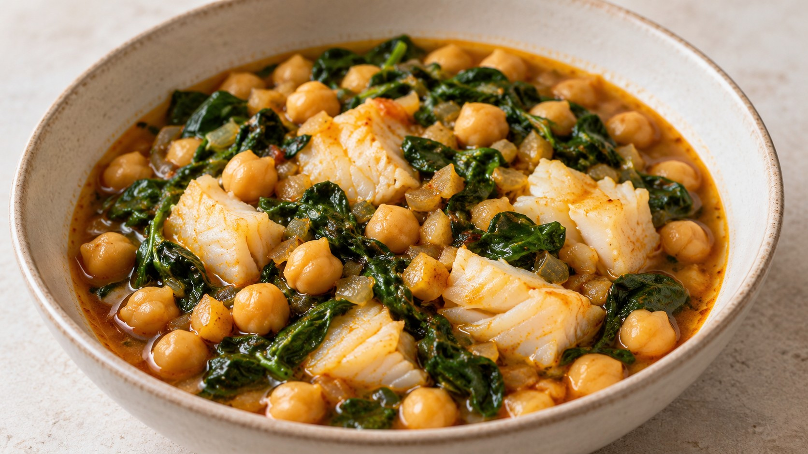

Potaje de bacalao

Descargar receta en PDF · A4Más de Legumbres
Ingredientes
- 400 g garbanzos cocidos (peso escurrido)
- 200 g bacalao desalado sin espinas
- 200 g espinacas frescas
- 150 g cebolla
- 2 dientes ajo
- 10 g aceite de oliva virgen extra
- ½ cucharadita pimentón dulce
- 1 hoja laurel
- 350-450 ml agua
- Sal (solo si hace falta)
Preparación
Escurre y enjuaga los garbanzos. Pica fina la cebolla y los ajos. Lava las espinacas y escúrrelas. Revisa que el bacalao no tenga espinas y córtalo en trozos de unos 3 cm.
Calienta los 10 g de aceite en una cazuela a fuego medio-bajo. Añade la cebolla y cocina 10-12 minutos, removiendo, hasta que esté tierna. Si se agarra, añade una cucharada de agua. Incorpora el ajo y rehoga 2 minutos más.
Baja el fuego, añade el pimentón y remueve unos segundos. Vierte enseguida 350 ml de agua e incorpora los garbanzos y el laurel. Cuando empiece a hervir suavemente, cocina 10 minutos. Aplasta una cucharada de garbanzos con un poco de caldo y devuélvela a la cazuela para darle cuerpo.
Añade las espinacas por tandas y mezcla suavemente hasta que pierdan volumen. Si el potaje está muy espeso, añade parte del agua restante.
Coloca los trozos de bacalao entre los garbanzos. Cocina a fuego suave, sin hervir con fuerza, unos 4-5 minutos según su grosor, hasta que el centro esté opaco y las lascas se separen fácilmente. Mueve la cazuela con suavidad en lugar de remover con cuchara. Retira el laurel, prueba el caldo y añade sal solo si hace falta. Sirve caliente.
Claves
El bacalao debe estar ya desalado; si lo compras en salazón, sigue las instrucciones de desalado del producto antes de empezar. Los garbanzos se pesan cocidos y escurridos. Empieza con 350 ml de agua y ajusta hasta 450 ml según prefieras el caldo. Las espinacas y el pescado se añaden al final para evitar una cocción excesiva. El tiempo del bacalao depende del grosor de los trozos.
Fuente
🌿 Adaptada de una receta de Eva, la nutricionista